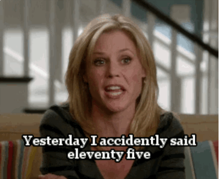

(2) Claire Dunphy
Initially used to be a homemaker, but started working for her dad's (Jay) company, Pritchett's Closets & Blinds, once her kids got older. Eventually, she lead the company and merged it with Ezra Vision. I respect that despite having an extremely overbearing mom (Dede), she never treated her own kids as badly as she was treated. I will admit she is uptight and a bit overbearing with her kids, but she's honestly not as bad as Dede and shouldn't be compared to her.
